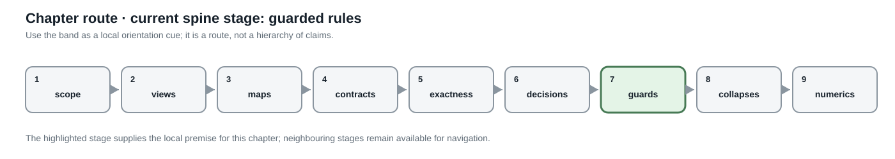

Guarded normalization rules
Page status: candidate rule catalogue; individual rules require explicit certificates.
This chapter begins a catalogue of candidate rules. Each rule distinguishes physical normalization from more general behavioral reduction.


The catalogue’s central operational rule is refusal with a structured reason when a guard fails; a candidate is never silently approximated.
Canonical conductor coordinates
Before comparing or composing multiconductor elements, normalize:
- terminal orientation;
- conductor labels and ordering;
- phase and neutral identity;
- voltage and current reference directions;
- units and base quantities;
- matrix permutation under terminal relabeling.
For a conductor permutation matrix $P$, a series impedance matrix transforms as
\[Z' = P Z P^\mathsf{T}.\]
Equality of raw matrices without equality of conductor coordinates is not a valid equivalence test.
Degree-two series elimination
The catalogue points to Degree-two series elimination for the complete coordinate-aware rule, executable guards, mutual-coupling counterexample, grounding counterexample, recovery map, and nominal-$\pi$ closure warning. In particular, the target impedance is $Z_1+P^{\mathsf T}Z_2P$, not an unqualifiedZ_1+Z_2`: the second section must first be pulled back into the first section's conductor coordinates.
This catalogue entry deliberately records only the rule-family distinction: behavioural series elimination may be exact in a generic two-port library, whereas merging two assets into one homogeneous physical line requires a separate closure proof for construction, ratings, ownership, grounding, charging, and outage semantics.
Constraint transformation for series elements
When exactly the same conductor current traverses both series elements and the current-feasible sets are $\mathcal C_1$ and $\mathcal C_2$, the exact equivalent set is
\[\mathcal C_{\mathrm{eq}}=\mathcal C_1\cap\mathcal C_2.\]
For independent upper current magnitudes this becomes the componentwise minimum. It does not automatically handle terminal-MVA limits, dynamic thermal ratings, emergency durations, direction dependence, or temperature states. Those constraints should either be lifted through recovered internal variables or preserved as residual source constraints.
Parallel recognition and aggregation
Parallel assets should first be recognized as a bundle without destroying membership. For linear branches,
\[i_{\mathrm{total}}=\sum_eY_e\Delta v,\]
but each branch still has
\[i_e=Y_e\Delta v.\]
An aggregate electrical factor can coexist with the bundle if it stores the individual flow-recovery map and constraints. Destructive replacement is valid only for an observation and decision contract that cannot distinguish bundle members.
This is stricter than the practical MergeParallel operation offered by OpenDSS [52]. OpenDSS's reduction tools are important evidence of engineering demand, but also show why application-level procedures should not silently define the canonical data semantics.
Switch contraction
An ideal closed switch can identify its endpoint junctions for a fixed state. The rule must be rejected or qualified when:
- the switch is lossy or has nonzero impedance;
- its status is a decision variable;
- switch flow is measured or limited;
- protection or operational procedures refer to the switch;
- alternative states must be studied from the same model.
The quotient should retain a membership map from each derived bus to all source connectivity nodes and switches.
Multiwinding transformer compilation
A multiwinding transformer is naturally a multiport factor. A two-port-only target formulation may compile it into ideal two-winding transformers, internal buses, impedance branches and shunts. This is a semantics-preserving realization only if it preserves:
- winding voltage/current conventions;
- vector group, polarity and phase displacement;
- short-circuit impedance data consistency;
- magnetizing and no-load losses;
- taps and their control ownership;
- per-winding ratings and terminal constraints.
Round-trip tests should verify that the compiled network's terminal relation matches the source device and that source-level decisions map uniquely to the virtual objects.
Rewrite-system questions
Local rules can overlap. Merging two line segments before compiling grounding, for example, may produce a different intermediate graph than compiling the ground first. A scientific normalization system must study:
- termination of repeated rewrites;
- critical pairs and confluence;
- uniqueness only up to typed isomorphism;
- canonical selection when several electrically equivalent minimal networks exist;
- preservation of provenance under rewrite composition.
Electrical network equivalence already shows that a unique minimal graph need not exist: series, parallel and $Y$–$\Delta$ transformations can relate distinct critical networks with the same boundary response. The inverse-network literature provides the appropriate caution [36], while algebraic graph transformation provides tools for typed rules, critical pairs and confluence [43].